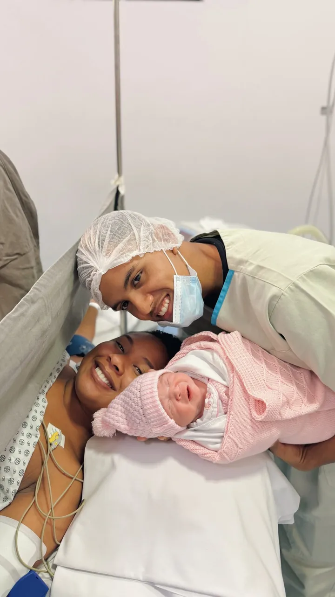
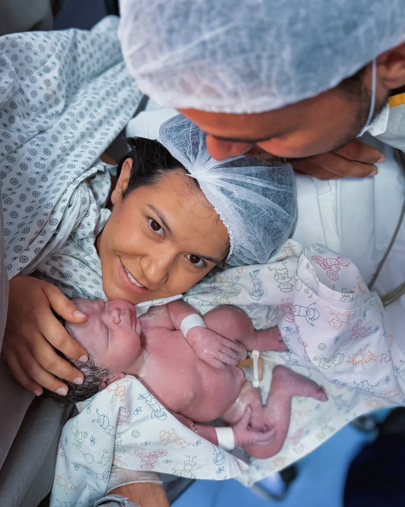
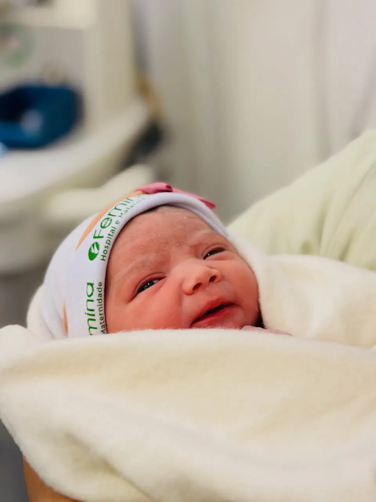
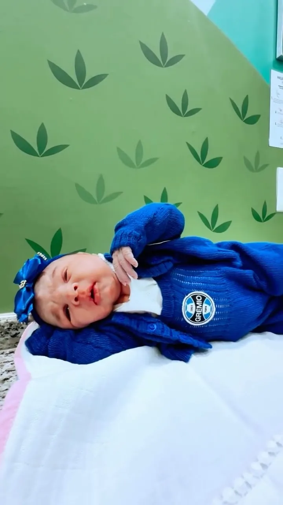
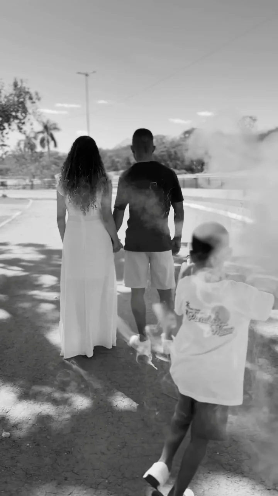
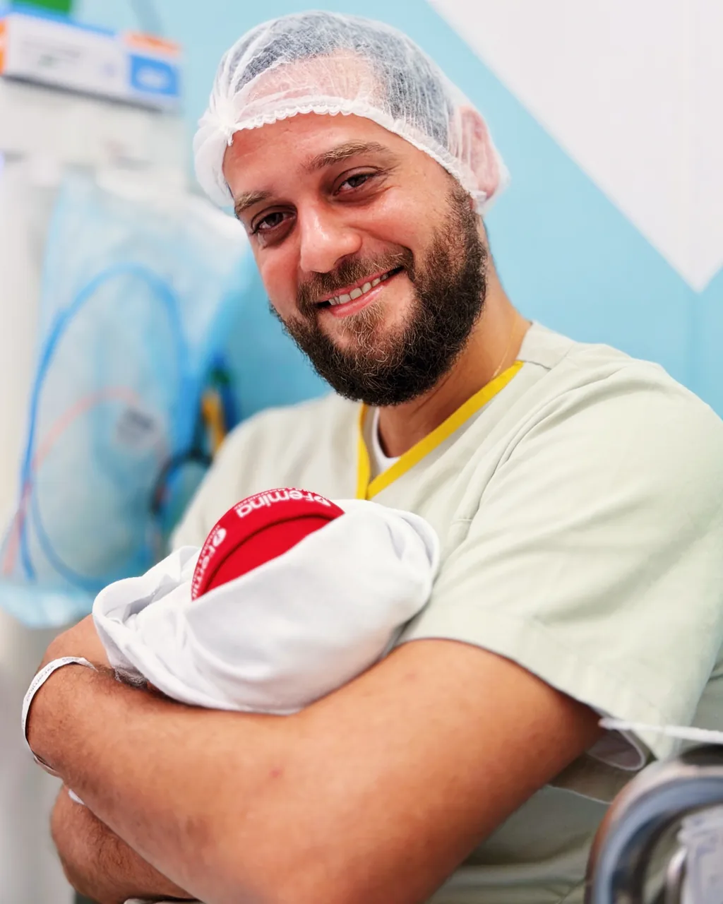
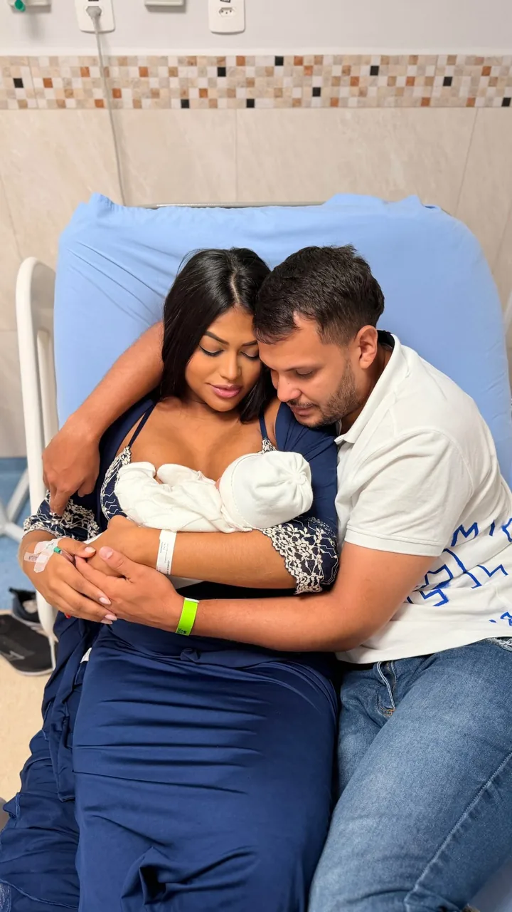
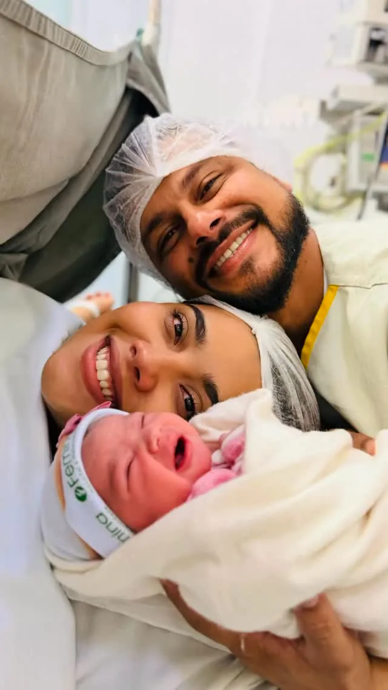

Silvoney Filmmaker · Portfólio
Ensaios e retratos.
Do nascimento à infância. Escolha um álbum para conhecer meu trabalho.
Escolha um álbum
Partos
O primeiro encontro na maternidade.







Primeiros dias
Retratos e pequenos detalhes dos recém-nascidos.







Infância
Registros da infância ao ar livre.


Família
Bebês, crianças e suas famílias.









Aniversários
Lembranças de aniversários e celebrações.


Vamos conversar
Vamos registrar esse momento?
Me conte o que deseja registrar e a data que tem em mente. Vamos conversar pelo WhatsApp.